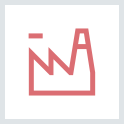

Технологія
Вітамінно-мінеральні комплекси SWISS ENERGY® спеціально розроблені компанією Swiss Energy Pharma GmbH (Швейцарія) у співпраці з провідними лікарями і фахівцями зі здорового харчування
Капсула містить мікрогранули не більше 1 мм. Вони покриті пористою мембраною, через яку активні інгредієнти проникають за декілька годин, повільно розтворяючись в організмі. Мембрана забезпечує захист активних інгредієнтів від руйнуючої дії шлункового соку. Це сприяє більш повному засвоєнню корисних речовин і гарантує високу ефективність вітамінів.
-
Швейцарська якість
Швейцарські інгредієнти в комплексі з сучасними стандартами виробництва забезпечують преміальну якість продукції.
-
Належна виробнича практика
Кожен продукт контролюється протягом всього виробничого циклу, щоб забезпечити відповідність найвищим стандартам якості. У виробництві використовуються тільки GMP-сертифіковані потужності, які відповідають суровим європейським вимогам.
-

Науковий підхід
Оптимальний баланс інгредієнтів необхідних для організму - основна вимога до вітамінів, виробленим під торговою маркою SWISS ENERGY. Унікальні формули вітамінних комплексів і науково обґрунтований підхід до рекомендованих дозувань забезпечує максимальну ефективність і безпеку.